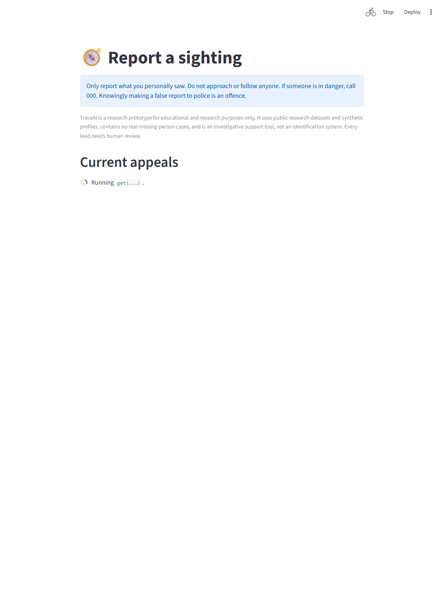
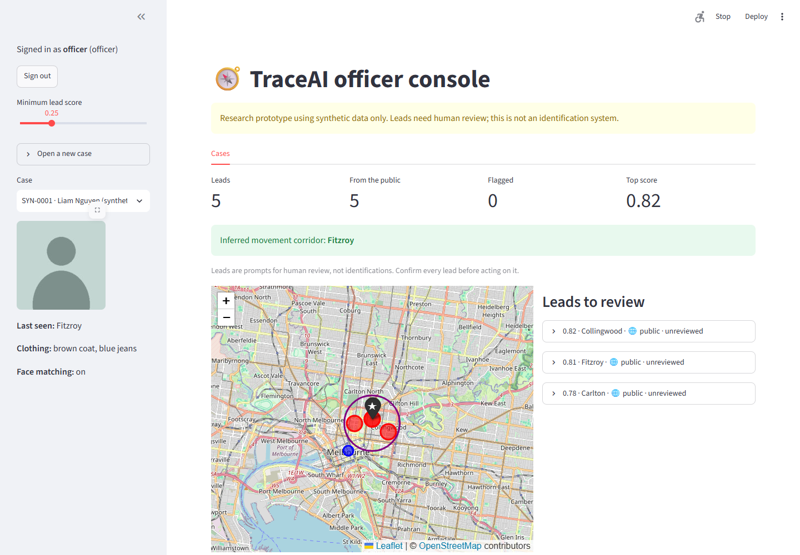
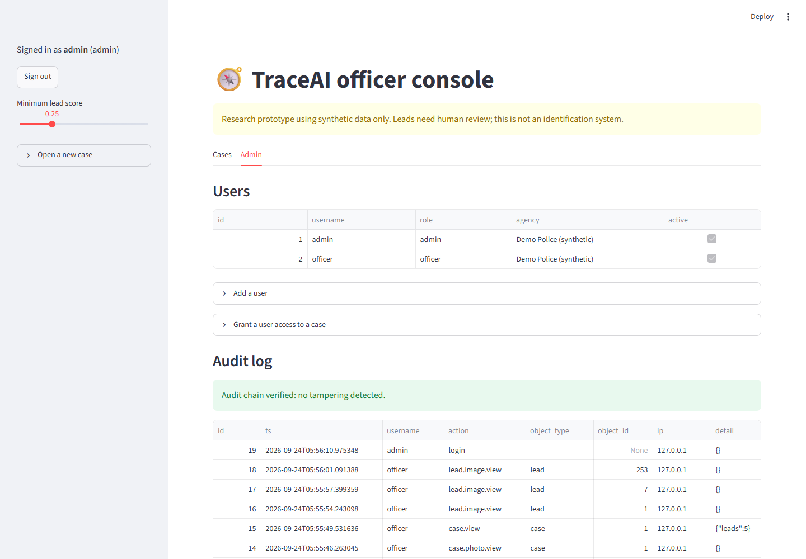

Ranking witness sightings for missing-person investigators
TraceAI combines face similarity, natural-language extraction, geospatial clustering and a lead-scoring model, so investigators review the most promising sightings first. Police use it, the public can only report, and misuse is designed against from the start.
Explore a synthetic case
Every case, sighting and score below was produced by the project's real pipeline on invented data. Pick a case, click a lead on the map or in the list, and see exactly why it ranked where it did.
Why did it score that?
Eight reports about the same person (last seen at Flinders Street Station at midday, grey hoodie), run through the real scoring code. Watch the score move as one thing changes.
How a lead score is built
Does it rank the right sightings first?
A small reproducible evaluation on synthetic data (python -m scripts.evaluate). Each case ranks 42 sightings, only 3 of which are true, so random ordering gets precision@3 of about 0.07. Two settings are shown because the first turned out to be too easy.
What this shows, and what it doesn't
The standard setting is easy: text alone scores 0.91 and fusion (0.94) is within the noise. The fair test is the photo-availability table: decoys look like true sightings, so text alone is at chance (about 0.50), and each tip keeps its photo at the stated rate whatever its label. Fused ranking scores 0.62 with 20% of tips carrying a photo and 0.81 with 50%, ahead of both text alone and face alone, which is what combining signals is for.
Caveats: at 100% photos the face alone is already perfect, because synthetic frontal photos are easy for the face model, so treat that row as a ceiling. At low photo rates the limit is information: a photo-less true sighting with look-alike text has nothing that separates it from a photo-less decoy. The plain hard setting's 0.96 is inflated (every decoy has a photo, one true sighting per person does not), which is why that test was added. Everything is synthetic, with 30 cases per setting, and each earlier fix lowered the numbers.
The real application
The full system behind the demo: a public portal, an officer console, and an admin view with the audit log. These screenshots use placeholder avatars: the project's test photos are real people, so they are never shown.



How it works
A modular pipeline turns a report and an optional photo into ranked, explainable leads.
Two trust zones
The public and the police never share a process. The public app does not contain the officer routes at all.
Public zone
- Read police-published appeals (city-level location only)
- Submit a tip, with rate limits and a consent notice (the API also supports a honeypot field for custom front ends)
- Receives only a random receipt, never a score, match or case
Officer zone
- Login, lockout and per-case need-to-know access
- Ranked leads with a per-signal breakdown, on a map
- Every read and change in a tamper-evident audit log
Designed against misuse
A tool like this can be abused, so the risks are part of the design and each control has a test.
| Risk | Control |
|---|---|
| Stalking someone who fled an abuser, via a "missing" report | Cases open only from a police reference plus a family-violence screening attestation. The public never searches, sees matches or sees exact locations. |
| Probing the tip form to locate someone | A tip returns only a receipt. Tipsters are never told whether anything matched. |
| Fake or malicious tips | Rate limits, consent and false-report notice, a honeypot field (enforced by the API; the bundled Streamlit form does not include it), and flagging of repeat sources and duplicate text. Tips only join a review queue, so they never trigger action. |
| Insider snooping | Per-case need-to-know (even admins are blocked), hash-chained audit log, and reading the log is itself logged. |
| Face-matching abuse | Off unless the officer attests the photo was lawfully obtained. Results are similarity scores for human review, never names. |
| Keeping data forever | Closing a case deletes its photo, face embedding and leads. Public tips expire after 90 days. |
Engineering notes
Tests that actually bite
The access-control suite runs through the real HTTP layer. I broke each safeguard on purpose to confirm a test fails, and that exposed one weak test, now fixed.
Bugs found and fixed
Ranking evaluation caught synthetic faces coming out black (a float-to-uint8 scaling bug) and wrong-person text reports outranking real matches. An automated review found four more, all fixed with regression tests.
Honest about limits
Scores are heuristic and tuned on synthetic data. The place list is about 50 landmarks, not full OpenStreetMap. The README states these, plus what is required before real use.
Stack
FastAPI, SQLAlchemy (SQLite or PostgreSQL), InsightFace/ArcFace, spaCy, sentence-transformers, scikit-learn DBSCAN, Streamlit, Docker Compose.